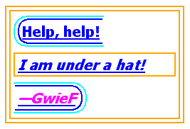
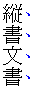
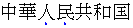

概要
このモジュールは、下線や影付、圏点といったテキスト装飾に関連するCSSの機能を含んでいる。
CSSはHTMLやXMLのように構造化されたドキュメントをスクリーンや紙にレンダリングしたり、スピーチさせたりするための言語である。
Status of this document
This section describes the status of this document at the time of
its publication. Other documents may supersede this document. A list of
current W3C publications and the latest revision of this technical report
can be found in the W3C technical reports
index at http://www.w3.org/TR/.
This document was produced by the CSS Working Group as a Candidate
Recommendation.
A Candidate Recommendation is a document that has been widely reviewed
and is ready for implementation. W3C encourages everybody to implement
this specification and return comments to the (archived) public
mailing list
www-style@w3.org (see instructions). When sending
e-mail, please put the text “css-text-decor-3” in the subject,
preferably like this: “[css-text-decor-3] …summary
of comment…”
Publication as a Candidate Recommendation does not imply endorsement by
the W3C Membership. This is a draft document and may be updated, replaced
or obsoleted by other documents at any time. It is inappropriate to cite
this document as other than work in progress.
This document was produced by a group operating under the 5 February
2004 W3C Patent Policy. W3C maintains a public list of any patent disclosures made in
connection with the deliverables of the group; that page also includes
instructions for disclosing a patent. An individual who has actual
knowledge of a patent which the individual believes contains
Essential Claim(s) must disclose the information in accordance with
section 6 of the W3C Patent Policy.
This CSS module has been produced as a combined effort of the W3C Internationalization
Activity, and the Style
Activity and is maintained by the CSS Working Group. It also
includes contributions made by participants in the XSL Working Group (members only).
以下の機能はat risk扱いで、正しい実装がされないとCR期間中にカットされるだろう。
実装報告はまだない。テストスイートは開発中である。W3C CSS
test suites page. を参照のこと。
本仕様は2014.2.1まではPRへ移行しない。(移行条件の詳細は CR Exit
Criteria を参照のこと)
最後のWDからの変更点は Appendix C に、そのドラフトへのコメントは Disposition of Comments に記してある。
Table of Contents
1. Introduction
This subsection is non-normative.
This module covers text decoration, i.e. decorating the glyphs of the
text once typeset according to font and typographic rules. (See [CSS3TEXT] and [CSS3-FONTS].)
Such features are traditionally used not only for purely decorative
purposes, but also in some cases to show emphasis, for honorifics, and to
indicate editorial changes such as insertions, deletions, and
misspellings.
CSS Levels 1 and 2 only defined very basic line decorations (underlines, overlines, and
strike-throughs) appropriate to Western typographical traditions. Level 3
of this module adds the ability to change the color, style, position, and
continuity of these decorations, and also introduces emphasis marks (traditionally used in East
Asian typography), and shadows (which
were proposed then deferred from Level 2).
1.1. Module Interactions
This module replaces and extends the text-decorating features defined in
[CSS21] chapter 16.
1.2. Values
This specification follows the CSS property
definition conventions from [CSS21]. Value types not defined in
this specification are defined in CSS Level 2 Revision 1 [CSS21]. Other CSS
modules may expand the definitions of these value types: for example [CSS3COLOR],
when combined with this module, expands the definition of the
<color> value type as used in this specification.
In addition to the property-specific values listed in their definitions,
all properties defined in this specification also accept the inherit
keyword as their property value. For readability it has not been repeated
explicitly.
1.3. Terminology
The terms character, letter, and content language as used in this
specification are defined in [CSS3TEXT]. Other terminology and
concepts used in this specification are defined in [CSS21] and [CSS3-WRITING-MODES].
2. Line Decoration:
Underline, Overline, and Strike-Through
The following properties describe line decorations that are added to
the content of an element. When specified on or propagated to an inline
box, that box becomes a decorating box for
that decoration, applying the decoration to all its fragments. The
decoration is then further propagated to any in-flow block-level boxes
that split the inline (see CSS2.1
section 9.2.1.1). When specified on or propagated to a block container
that establishes an inline formatting context, the decorations are
propagated to an anonymous inline box that wraps all the in-flow
inline-level children of the block container. When specified on or
propagated to a ruby box, the decorations are propagated only to the ruby
base. For all other box types, the decorations are propagated to all
in-flow children.
Note that text decorations are not propagated to any
out-of-flow descendants, nor to the contents of atomic inline-level
descendants such as inline blocks and inline tables. They are also not
propagated to inline children of inline boxes, although the decoration is
applied to such boxes.
By default underlines, overlines, and line-throughs are applied only to
non-replaced inline boxes, and are drawn across all text (including white
space, letter spacing, and word spacing). Atomic inlines, such as images,
are not decorated. The ‘text-decoration-skip’ property can be used to
modify this behavior, for example allowing atomic inlines to be underlined
or requiring that white space be skipped. Margins, borders, and padding of
the decorating box are always
skipped.
Relatively positioning a descendant moves all text decorations applied
to it along with the descendant's text; it does not affect calculation of
the decoration's initial position on that line. The ‘visibility’ property, ‘text-shadow’,
filters, and other graphical transformations likewise affect text
decorations as part of the text they're drawn on, even if the decorations
were specified on an ancestor box, and do not affect the calculation of
their initial positions or thicknesses. (In the case of line decorations
drawn over an atomic inline or across the margins/borders/padding of a
non-replaced inline box, they are analogously associated with the affected
atomic inline / non-replaced inline box rather than with the decorating box.)
In the following style sheet and document fragment:
blockquote { text-decoration: underline; color: blue; }
em { display: block; }
cite { color: fuchsia; }
<blockquote>
<p>
<span>
Help, help!
<em> I am under a hat! </em>
<cite> —GwieF </cite>
</span>
</p>
</blockquote>
...the underlining for the blockquote element is propagated to an
anonymous inline box that surrounds the span element, causing the text
"Help, help!" to be blue, with the blue underlining from the anonymous
inline underneath it, the color being taken from the blockquote element.
The <em>text</em> in the em block is also
underlined, as it is in an in-flow block to which the underline is
propagated. The final line of text is fuchsia, but the underline
underneath it is still the blue underline from the anonymous inline
element.

This diagram shows the boxes involved in the example above. The rounded
aqua line represents the anonymous inline element wrapping the inline
contents of the paragraph element, the rounded blue line represents the
span element, and the orange lines represent the blocks.
2.1. Text
Decoration Lines: the ‘text-decoration-line’ property
| Name:
| text-decoration-line
|
| Value:
| none | [ underline || overline || line-through || blink ]
|
| Initial:
| none
|
| Applies to:
| all elements
|
| Inherited:
| no (but see prose)
|
| Percentages:
| N/A
|
| Media:
| visual
|
| Computed value:
| as specified
|
| Animatable:
| no
|
Specifies what line decorations, if any, are added to the element.
Values have the following meanings:
- ‘
none’
- Neither produces nor inhibits text decoration.
- ‘
underline’
- Each line of text is underlined.
- ‘
overline’
- Each line of text has a line over it (i.e. on the opposite side from
an underline).
- ‘
line-through’
- Each line of text has a line through the middle.
- ‘
blink’
- The text blinks (alternates between visible and invisible).
Conforming user agents may simply not blink the text. Note that not
blinking the text is one technique to satisfy checkpoint
3.3 of WAI-UAAG. This value is deprecated in favor
of Animations [CSS3-ANIMATIONS].
2.2. Text
Decoration Color: the ‘text-decoration-color’ property
| Name:
| text-decoration-color
|
| Value:
| <color>
|
| Initial:
| currentColor
|
| Applies to:
| all elements
|
| Inherited:
| no
|
| Percentages:
| N/A
|
| Media:
| visual
|
| Computed value:
| the computed color
|
| Animatable:
| as color
|
This property specifies the color of text decoration (underlines
overlines, and line-throughs) set on the element with ‘text-decoration-line’.
The color of text decorations must remain the same on all decorations
originating from a given element, even if descendant boxes have different
specified colors.
2.3. Text
Decoration Style: the ‘text-decoration-style’ property
| Name:
| text-decoration-style
|
| Value:
| solid | double | dotted | dashed | wavy
|
| Initial:
| solid
|
| Applies to:
| all elements
|
| Inherited:
| no
|
| Percentages:
| N/A
|
| Media:
| visual
|
| Computed value:
| as specified
|
| Animatable:
| no
|
This property specifies the style of the line(s) drawn for text
decoration specified on the element. Values have the same meaning as for
the border-style
properties [CSS3BG]. ‘wavy’ indicates a wavy line.
The style of text decorations must remain the same on all decorations
originating from a given element, even if descendant boxes have different
specified styles.
2.4. Text
Decoration Shorthand: the ‘text-decoration’ property
This property is a shorthand for setting ‘text-decoration-line’, ‘text-decoration-color’, and ‘text-decoration-style’ in one declaration.
Omitted values are set to their initial values. A ‘text-decoration’
declaration that omits both the ‘text-decoration-color’ and ‘text-decoration-style’ values is
backwards-compatible with CSS Levels 1 and 2.
The following example underlines unvisited links with a solid blue
underline in CSS1 and CSS2 UAs and a navy dotted underline in CSS3 UAs.
:link {
color: blue;
text-decoration: underline;
text-decoration: navy dotted underline; /* Ignored in CSS1/CSS2 UAs */
}
2.5. Text
Decoration Line Continuity: the ‘text-decoration-skip’ property
| Name:
| text-decoration-skip
|
| Value:
| none | [ objects || spaces || ink || edges || box-decoration ]
|
| Initial:
| objects
|
| Applies to:
| all elements
|
| Inherited:
| yes
|
| Percentages:
| N/A
|
| Media:
| visual
|
| Computed value:
| as specified
|
| Animatable:
| no
|
This property specifies what parts of the element's content any text
decoration affecting the element must skip over. It controls all text
decoration lines drawn by the element and also any text decoration lines
drawn by its ancestors. Values have the following meanings:
- ‘
none’
- Skip nothing: text-decoration is drawn for all text content and across
atomic inline-level boxes.
- ‘
objects’
- Skip this element (its entire margin box) if it is an atomic inline
(such as an image or inline-block).
- ‘
spaces’
- Skip all spacing, i.e. all characters
with the Unicode White_Space property [UAX44] and all word separator
characters, plus any adjacent letter-spacing or word-spacing [CSS3TEXT].
- ‘
ink’
- Skip over where glyphs are drawn: interrupt the decoration line to let
the shape of the text show through where the text decoration would
otherwise cross over a glyph. The UA must skip a small distance to either
side of the glyph outline.
- ‘
edges’
- The UA should place the start and end of the line inwards slightly
(e.g. by half a line thickness) from the content edge of the decorating box so that, e.g. two
underlined elements side-by-side do not appear to have a single
underline. (This is important in Chinese, where underlining is a form of
punctuation.)
- ‘
box-decoration’
- Skip over the box's margin, border, and padding areas. Note that this
only has an effect on decorations imposed by an ancestor; a decorating box never draws over its own
box decoration.
Note that this property inherits and that descendant elements
can have a different setting.
Note that CSS 2.1 required skipping margins, borders, and
padding always. In this level, by default only the margins, borders, and
padding of the decorating box are
skipped. In the future CSS2.1 may be updated to match this new default.
| Name:
| text-underline-position
|
| Value:
| auto | [ under || [ left | right ] ]
|
| Initial:
| auto
|
| Applies to:
| all elements
|
| Inherited:
| yes
|
| Percentages:
| N/A
|
| Media:
| visual
|
| Computed value:
| as specified
|
| Animatable:
| no
|
This property sets the position of an underline specified on the
element. (It does not affect underlines specified by ancestor elements.)
If ‘left’ or ‘right’
is specified alone, ‘under’ is also implied.
The following example styles modern Chinese, Japanese, and Korean texts
with the appropriate underline positions in both horizontal and vertical
text:
:root:lang(ja), [lang|=ja], :root:lang(ko), [lang|=ko] { text-underline-position: under right; }
:root:lang(zh), [lang|=zh] { text-underline-position: under left; }
(Note that these rules are part of the suggested default UA style sheet.)
Values have the following meanings:
- ‘
auto’
- The user agent may use any algorithm to determine the underline's
position; however it must be placed at or under the alphabetic baseline.
It is suggested that the default underline position be
close to the alphabetic baseline, unless that would either cross
subscripted (or otherwise lowered) text or draw over glyphs from Asian
scripts such as Han or Tibetan for which an alphabetic underline is too
high: in such cases, shifting the underline lower or aligning to the em
box edge as described for ‘under’ may be more
appropriate.
- ‘
under’
- The underline is positioned under the element's text content.
In this case the underline usually does not cross the descenders. (This
is sometimes called “accounting” underline.) This value can be
combined with ‘
left’ or ‘right’ if a particular side is preferred in vertical
writing modes.
Because ‘text-underline-position’ inherits, and is
not reset by the ‘text-decoration’ shorthand, the following
example switches the document to use ‘under’
underlining, which can be more appropriate for writing systems with
long, complicated descenders. It is also often useful for mathematical
or chemical texts that use many subscripts.
:root { text-underline-position: under; }
- ‘
left’
- In vertical writing modes, the underline is aligned as for ‘
under’, except it is always aligned to the left edge
of the text. If this causes the underline to be drawn on the "over" side
of the text, then an overline also switches sides and is drawn on the
"under" side.
- ‘
right’
- In vertical writing modes, the underline is aligned as for ‘
under’, except it is always aligned to the right edge
of the text. If this causes the underline to be drawn on the "over" side
of the text, then an overline also switches sides and is drawn on the
"under" side.
In vertical writing modes, the ‘text-underline-position’ values ‘left’ and ‘right’ allow
placing the underline on either side of the text. (In horizontal writing
modes, both values are treated as ‘under’.)
The exact position and thickness of line decorations is UA-defined in
this level. However, for underlines and overlines the UA must use a single
thickness and position on each line for the decorations deriving from a
single decorating box.
Note, since line decorations can span elements with varying font sizes
and vertical alignments, the best position for a line decoration is not
necessarily the ideal position dictated by the decorating box. For example, an
overline positioned to a small font will effectively become a
line-through if the element contains text in a significantly larger
font-size. Even for underlines, if the text is not aligned to the
alphabetic baseline (for example, in vertical typesetting styles, text is
aligned to the central baseline by default) an underline will cut through
descendant text of a larger font-size.
UAs must adjust line positions to match the shifted metrics of
decorating boxes positioned with
‘vertical-align’ [CSS21] or subscripted/superscripted
via ‘font-variant-position’ [CSS3-FONTS],
but must not adjust the line position or thickness in response to
descendants of a decorating box that
are so styled. This allows superscripts and subscripts to be properly
decorated (underlined, struck through, etc.) but prevents them from
distorting or breaking the positioning of such decorations on their
ancestors.
Some font formats (such as OpenType) can offer information about the
appropriate position of a line decoration. The UA should use such
information (such as the underline thickness, or appropriate alphabetic
underline position) from the font wherever appropriate.
Typically, OpenType font metrics give the position of an
‘alphabetic’ underline; in some cases
(especially in CJK fonts), it gives the position of a ‘under left’ underline. (In this case, the font's
underline metrics typically touch the bottom edge of the em box). The UA
may but is not required to correct for incorrect font metrics.
3. Emphasis Marks
East Asian documents traditionally use small symbols next to each glyph
to emphasize a run of text. For example:
The ‘text-emphasis’ shorthand, and its ‘text-emphasis-style’ and ‘text-emphasis-color’ longhands, can be used to
apply such marks to the text. The ‘text-emphasis-position’ property, which
inherits separately, allows setting the emphasis marks’ position with
respect to the text.
3.1. Emphasis
Mark Style: the ‘text-emphasis-style’ property
| Name:
| text-emphasis-style
|
| Value:
| none | [ [ filled | open ] || [ dot | circle | double-circle |
triangle | sesame ] ] | <string>
|
| Initial:
| none
|
| Applies to:
| all elements
|
| Inherited:
| yes
|
| Percentages:
| N/A
|
| Media:
| visual
|
| Computed value:
| ‘none’, a pair of keywords
representing the shape and fill, or a string
|
| Animatable:
| no
|
This property applies emphasis marks to the element's text. Values have
the following meanings:
- ‘
none’
- No emphasis marks.
- ‘
filled’
- The shape is filled with solid color.
- ‘
open’
- The shape is hollow.
- ‘
dot’
- Display small circles as marks. The filled dot is U+2022 ‘
•’, and the open dot is U+25E6 ‘◦’.
- ‘
circle’
- Display large circles as marks. The filled circle is U+25CF ‘
●’, and the open circle is U+25CB ‘○’.
- ‘
double-circle’
- Display double circles as marks. The filled double-circle is U+25C9
‘
◉’, and the open double-circle is U+25CE
‘◎’.
- ‘
triangle’
- Display triangles as marks. The filled triangle is U+25B2 ‘
▲’, and the open triangle is U+25B3 ‘△’.
- ‘
sesame’
- Display sesames as marks. The filled sesame is U+FE45 ‘
﹅’, and the open sesame is U+FE46 ‘﹆’.
- ‘
<string>’
- Display the given string as marks. Authors should not specify more
than one character in <string>. The
UA may truncate or ignore strings consisting of more than one grapheme
cluster.
If a shape keyword is specified but neither of ‘filled’ nor ‘open’ is
specified, ‘filled’ is assumed. If only
‘filled’ or ‘open’
is specified, the shape keyword computes to ‘circle’ in horizontal writing mode and ‘sesame’ in vertical writing mode.
The marks should be drawn using the element's font settings with its
size scaled down to 50%. However, not all fonts have all these glyphs, and
some fonts use inappropriate sizes for emphasis marks in these code
points. The UA may opt to use a font known to be good for emphasis marks,
or the marks may instead be synthesized by the UA. Marks must remain
upright in vertical writing modes: like CJK characters, they do not rotate
to match the writing mode.
One example of good fonts for emphasis marks is Adobe's
opensource project, Kenten Generic
OpenType Font, which is specially designed for the emphasis marks.
The marks are drawn once for each character. However, emphasis marks are not
drawn for characters that are:
- Word
separators or that belong to the Unicode separator classes (Z*). (But
note that emphasis marks are drawn for a space that combines
with any combining characters.)
- Characters belonging to the Unicode classes for control codes and
unassigned characters (Cc, Cf, Cn).
3.2. Emphasis
Mark Color: the ‘text-emphasis-color’ property
| Name:
| text-emphasis-color
|
| Value:
| <color>
|
| Initial:
| currentColor
|
| Applies to:
| all elements
|
| Inherited:
| yes
|
| Percentages:
| N/A
|
| Media:
| visual
|
| Computed value:
| as specified
|
| Animatable:
| as color
|
This property specifies the foreground color of the emphasis marks.
The ‘currentcolor’ keyword computes to itself and is
resolved to the value of ‘color’ after
inheritance is performed. This means ‘text-emphasis-color’ by default matches the
text ‘color’ even as ‘color’ changes across elements.
3.3. Emphasis Mark
Shorthand: the ‘text-emphasis’ property
| Name:
| text-emphasis
|
| Value:
| ‘<text-emphasis-style>’ ||
‘<text-emphasis-color>’
|
| Initial:
| see individual properties
|
| Applies to:
| all elements
|
| Inherited:
| yes
|
| Percentages:
| N/A
|
| Media:
| visual
|
| Computed value:
| see individual properties
|
| Animatable:
| see individual properties
|
This property is a shorthand for setting ‘text-emphasis-style’ and ‘text-emphasis-color’ in one declaration.
Omitted values are set to their initial values.
Note that ‘text-emphasis-position’ is not reset in this
shorthand. This is because typically the shape and color vary, but the
position is consistent for a particular language throughout the document.
Therefore the position should inherit independently.
| Name:
| text-emphasis-position
|
| Value:
| [ over | under ] && [ right | left ]
|
| Initial:
| over right
|
| Applies to:
| all elements
|
| Inherited:
| yes
|
| Percentages:
| N/A
|
| Media:
| visual
|
| Computed value:
| as specified
|
| Animatable:
| no
|
This property describes where emphasis marks are drawn at. The values
have following meanings:
- ‘
over’
- Draw marks over the text in horizontal writing mode.
- ‘
under’
- Draw marks under the text in horizontal writing mode.
- ‘
right’
- Draw marks to the right of the text in vertical writing mode.
- ‘
left’
- Draw marks to the left of the text in vertical writing mode.
Emphasis marks are drawn exactly as if each character was assigned the
mark as its ruby annotation text with the ruby position given by ‘text-emphasis-position’ and the ruby alignment
as centered.
The effect of emphasis marks on the line height is the same as for ruby
text.
Note, the preferred position of emphasis marks depends on the language.
In Japanese for example, the preferred position is ‘over right’. In Chinese, on the other hand, the
preferred position is ‘under right’. The
informative table below summarizes the preferred emphasis mark positions
for Chinese and Japanese:
Preferred emphasis mark and ruby position
| Language
| Preferred position
| Illustration
|
| Horizontal
| Vertical
|
| Japanese
| over
| right
|
| 
|
| Mongolian
|
| Chinese
| under
| right
| 
|
If emphasis marks are applied to characters for which ruby is drawn in
the same position as the emphasis mark, the emphasis marks are placed
above the ruby.
Some editors prefer to hide emphasis marks when they conflict with
ruby. In HTML, this can be done with the following style rule:
ruby { text-emphasis: none; }
Some other editors prefer to hide ruby when they conflict with emphasis
marks. In HTML, this can be done with the following pattern:
em { text-emphasis: dot; } /* Set text-emphasis for <em> elements */
em rt { display: none; } /* Hide ruby inside <em> elements */
4. Text Shadows: the
‘text-shadow’
property
| Name:
| text-shadow
|
| Value:
| none | [ <length>{2,3} && <color>? ]#
|
| Initial:
| none
|
| Applies to:
| all elements
|
| Inherited:
| yes
|
| Percentages:
| N/A
|
| Media:
| visual
|
| Computed value:
| a color plus three absolute <length>s
|
| Animatable:
| as shadow
list
|
This property accepts a comma-separated list of shadow effects to be
applied to the text of the element. Values are interpreted as for ‘box-shadow’ [CSS3BG]. (But note that spread
values and the ‘inset’ keyword are not
allowed.) Each layer shadows the element's text and all its text
decorations (composited together). If the color of the shadow is not
specified, the shadow has the resulting color of the ink that it shadows.
The shadow effects are applied front-to-back: the first shadow is on
top. The shadows may thus overlay each other, but they never overlay the
text itself. The shadow must be painted at a stack level between the
element's border and/or background, if present, and the elements text and
text decoration. UAs should avoid painting text shadows over text in
adjacent elements belonging to the same stack level and stacking context.
(This may mean that the exact stack level of the shadows depends on
whether the element has a border or background: the exact stacking
behavior of text shadows is thus UA-defined.) It is undefined whether a
given shadow layer shadows each glyph or decoration independently or if
the text and/or decorations are flattened and then shadowed.
Unlike ‘box-shadow’, text shadows are
not clipped to the shadowed shape and may show through if the text is
partially-transparent. Like ‘box-shadow’,
text shadows do not influence layout, and do not trigger scrolling or
increase the size of the scrollable area.
The painting order of shadows defined here is the opposite of
that defined in the 1998 CSS2
Recommendation.
The ‘text-shadow’
property applies to both the ::first-line and
::first-letter pseudo-elements.
5. Painting Order of Text
Decorations
As in [CSS21],
text decorations are drawn immediately over/under the text they decorate,
in the following order (bottommost first):
Where line decorations are drawn across box decorations or atomic
inlines, they are drawn over non-positioned content and just below any
positioned descendants (immediately below layer #8 in CSS2.1 Appendix E).
6.1. Document Conventions
Conformance requirements are expressed with a combination of descriptive
assertions and RFC 2119 terminology. The key words “MUST”, “MUST
NOT”, “REQUIRED”, “SHALL”, “SHALL NOT”, “SHOULD”,
“SHOULD NOT”, “RECOMMENDED”, “MAY”, and “OPTIONAL” in the
normative parts of this document are to be interpreted as described in RFC
2119. However, for readability, these words do not appear in all uppercase
letters in this specification.
All of the text of this specification is normative except sections
explicitly marked as non-normative, examples, and notes. [RFC2119]
Examples in this specification are introduced with the words “for
example” or are set apart from the normative text with
class="example", like this:
This is an example of an informative example.
Informative notes begin with the word “Note” and are set apart from
the normative text with class="note", like this:
Note, this is an informative note.
Conformance to CSS Text Level 3 is defined for three conformance
classes:
- style
sheet
- A CSS
style sheet.
- renderer
- A UA
that interprets the semantics of a style sheet and renders documents that
use them.
- authoring tool
- A UA
that writes a style sheet.
A style sheet is conformant to CSS Text Level 3 if all of its
declarations that use properties defined in this module have values that
are valid according to the generic CSS grammar and the individual grammars
of each property as given in this module.
A renderer is conformant to CSS Text Level 3 if, in addition to
interpreting the style sheet as defined by the appropriate specifications,
it supports all the features defined by CSS Text Level 3 by parsing them
correctly and rendering the document accordingly. However, the inability
of a UA to correctly render a document due to limitations of the device
does not make the UA non-conformant. (For example, a UA is not required to
render color on a monochrome monitor.)
An authoring tool is conformant to CSS Text Level 3 if it writes style
sheets that are syntactically correct according to the generic CSS grammar
and the individual grammars of each feature in this module, and meet all
other conformance requirements of style sheets as described in this
module.
6.3. Partial Implementations
So that authors can exploit the forward-compatible parsing rules to
assign fallback values, CSS renderers must treat as
invalid (and ignore as
appropriate) any at-rules, properties, property values, keywords, and
other syntactic constructs for which they have no usable level of support.
In particular, user agents must not selectively ignore
unsupported component values and honor supported values in a single
multi-value property declaration: if any value is considered invalid (as
unsupported values must be), CSS requires that the entire declaration be
ignored.
6.4. Experimental
Implementations
To avoid clashes with future CSS features, the CSS2.1 specification
reserves a prefixed
syntax for proprietary and experimental extensions to CSS.
Prior to a specification reaching the Candidate Recommendation stage in
the W3C process, all implementations of a CSS feature are considered
experimental. The CSS Working Group recommends that implementations use a
vendor-prefixed syntax for such features, including those in W3C Working
Drafts. This avoids incompatibilities with future changes in the draft.
6.5. Non-Experimental
Implementations
Once a specification reaches the Candidate Recommendation stage,
non-experimental implementations are possible, and implementors should
release an unprefixed implementation of any CR-level feature they can
demonstrate to be correctly implemented according to spec.
To establish and maintain the interoperability of CSS across
implementations, the CSS Working Group requests that non-experimental CSS
renderers submit an implementation report (and, if necessary, the
testcases used for that implementation report) to the W3C before releasing
an unprefixed implementation of any CSS features. Testcases submitted to
W3C are subject to review and correction by the CSS Working Group.
Further information on submitting testcases and implementation reports
can be found from on the CSS Working Group's website at http://www.w3.org/Style/CSS/Test/.
Questions should be directed to the public-css-testsuite@w3.org
mailing list.
6.6. CR Exit Criteria
For this specification to be advanced to Proposed Recommendation, there
must be at least two independent, interoperable implementations of each
feature. Each feature may be implemented by a different set of products,
there is no requirement that all features be implemented by a single
product. For the purposes of this criterion, we define the following
terms:
- independent
- each implementation must be developed by a different party and cannot
share, reuse, or derive from code used by another qualifying
implementation. Sections of code that have no bearing on the
implementation of this specification are exempt from this requirement.
- interoperable
- passing the respective test case(s) in the official CSS test suite,
or, if the implementation is not a Web browser, an equivalent test. Every
relevant test in the test suite should have an equivalent test created if
such a user agent (UA) is to be used to claim interoperability. In
addition if such a UA is to be used to claim interoperability, then there
must one or more additional UAs which can also pass those equivalent
tests in the same way for the purpose of interoperability. The equivalent
tests must be made publicly available for the purposes of peer review.
- implementation
- a user agent which:
- implements the specification.
- is available to the general public. The implementation may be a
shipping product or other publicly available version (i.e., beta
version, preview release, or “nightly build”). Non-shipping product
releases must have implemented the feature(s) for a period of at least
one month in order to demonstrate stability.
- is not experimental (i.e., a version specifically designed to pass
the test suite and is not intended for normal usage going forward).
The specification will remain Candidate Recommendation for at least six
months.
Appendix A: Acknowledgements
This specification would not have been possible without the help from:
Ayman Aldahleh, Bert Bos, Tantek Çelik, Stephen Deach, John Daggett,
Martin Dürst, Laurie Anna Edlund, Ben Errez, Yaniv Feinberg, Arye
Gittelman, Ian Hickson, Martin Heijdra, Richard Ishida, Masayasu Ishikawa,
Michael Jochimsen, Eric LeVine, Ambrose Li, Håkon Wium Lie, Chris Lilley,
Ken Lunde, Nat McCully, Shinyu Murakami, Paul Nelson, Chris Pratley,
Marcin Sawicki, Arnold Schrijver, Rahul Sonnad, Michel Suignard, Takao
Suzuki, Frank Tang, Chris Thrasher, Etan Wexler, Chris Wilson, Masafumi
Yabe and Steve Zilles.
Appendix B: References
Normative references
-
- [CSS21]
- Bert Bos; et al. Cascading Style
Sheets Level 2 Revision 1 (CSS 2.1) Specification. 7 June
2011. W3C Recommendation. URL: http://www.w3.org/TR/2011/REC-CSS2-20110607
- [CSS3-FONTS]
- John Daggett. CSS Fonts
Module Level 3. 12 February 2013. W3C Working Draft. (Work in
progress.) URL: http://www.w3.org/TR/2013/WD-css3-fonts-20130212/
- [CSS3-WRITING-MODES]
- Elika J. Etemad; Koji Ishii. CSS
Writing Modes Module Level 3. 15 November 2012. W3C Working
Draft. (Work in progress.) URL: http://www.w3.org/TR/2012/WD-css3-writing-modes-20121115/
- [CSS3BG]
- Bert Bos; Elika J. Etemad; Brad Kemper. CSS
Backgrounds and Borders Module Level 3. 24 July 2012. W3C
Candidate Recommendation. (Work in progress.) URL: http://www.w3.org/TR/2012/CR-css3-background-20120724/
- [CSS3TEXT]
- Elika J. Etemad; Koji Ishii. CSS Text
Module Level 3. 13 November 2012. W3C Working Draft. (Work in
progress.) URL: http://www.w3.org/TR/2012/WD-css3-text-20121113/
- [RFC2119]
- S. Bradner. Key
words for use in RFCs to Indicate Requirement Levels. Internet
RFC 2119. URL: http://www.ietf.org/rfc/rfc2119.txt
-
- [CSS3-ANIMATIONS]
- Dean Jackson; et al. CSS
Animations. 19 February 2013. W3C Working Draft. (Work in
progress.) URL: http://www.w3.org/TR/2013/WD-css3-animations-20130219/
- [CSS3COLOR]
- Tantek Çelik; Chris Lilley; L. David Baron. CSS Color
Module Level 3. 7 June 2011. W3C Recommendation. URL: http://www.w3.org/TR/2011/REC-css3-color-20110607
- [UAX44]
- Mark Davis; Ken Whistler. Unicode Character
Database. 23 January 2012. Unicode Standard Annex #44. URL: http://www.unicode.org/reports/tr44/
Appendix C: Changes
Significant changes include:
- Clarified definitions of ‘
text-decoration-skip’ values.
- Updated required behavior of emphasis marks in the presence of ruby,
based on implementation feedback.
A Disposition of Comments is available.
Appendix D: Default UA Stylesheet
This appendix is informative, and is to help UA developers to implement
default stylesheet, but UA developers are free to ignore or change.
s, strike, del {
text-decoration: line-through;
}
u, ins, :link, :visited {
text-decoration: underline;
}
abbr[title], acronym[title] {
text-decoration: dotted underline;
}
/* disable inheritance of text-emphasis marks to ruby text:
emphasis marks should only apply to base text */
rt { text-emphasis: none; }
:root:lang(zh), [lang|=zh] {
/* default emphasis mark position is 'under right' for Chinese */
text-emphasis-position: under right;
}
:root:lang(ja), [lang|=ja], :root:lang(ko), [lang|=ko] {
/* default underline position is 'under right' for Japanese and Korean */
text-underline-position: under right;
}
:root:lang(zh), [lang|=zh] {
/* default underline position is 'under left' for Chinese */
text-underline-position: under left;
}
blink {
text-decoration-line: blink;
}
If you find any issues, recommendations to add, or
corrections, please send the information to www-style@w3.org with
[css-text-decor-3] in the subject line.
While ‘text-decoration-line: blink’ can't
be fully reproduced with other existing properties, authors can achieve a
very similar effect with the following CSS:
@keyframes blink {
0% {
visibility: hidden;
animation-timing-function: step-end;
}
25%, 100% {
visibility: visible;
}
}
blink {
animation: blink 1s infinite;
}